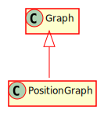

Hierarchy-Diagram
{kind=link}
Legend
 class
class
 abstract class
abstract class
 interface
interface
 public property
public property
 protected property
protected property
 private property
private property
 public method
public method
 protected method
protected method
 private method
private method
Hierarchy
- Graph
Index
Constructors
constructor
Constructs a new graph
Parameters
directed: boolean = false
Whether or not this graph is directed
Returns Graph
Properties
degree
An array representing the degree of the node specified by the index
directed
Whether or not the graph is directed
edges
An array of edges at the node specified by the index
num
The number of edges in the graph
num
The number of vertices in the graph
weighted
Whether or not the graph is weighted
Methods
add
Adds an edge between node x and y, with an optional weight
Parameters
x: number
The index of the start of the edge
y: number
The index of the end of the edge
Optional weight: number
The optional weight of the new edge
Returns void
add
Adds a node to this graph and returns the index of it
Returns number
The index of the new node
edge
Checks whether or not an edge exists between two nodes. This check is directional if this is a directed graph.
Parameters
x: number
The first node
y: number
The second node
Returns boolean
true if an edge exists, false otherwise
get
Gets the degree associated with node x
Parameters
x: number
The index of the node
Returns number
get
Gets the edge list associated with node x
Parameters
x: number
The index of the node
Returns EdgeNode
The head of a linked-list of edges
Protected node
Converts the specifed node into a string
Parameters
index: number
The index of the node to convert to a string
Returns string
The string representation of the node: "Node x"
to
Converts the Graph into a string format
Returns string
The graph as a string
An implementation of a graph data structure using edge lists. Inspired by The Algorithm Design Manual.